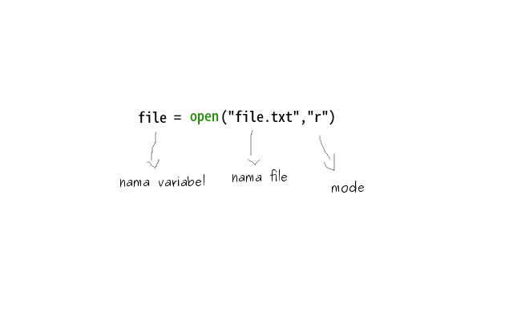

Membaca dan Menulis File di Python
proses baca dan tulis sangat penting untuk dipahami, dalam pemrograman Python, karena banyak digunakan
untuk pengolahan dan pemerosesan file.
Membaca file di python
python sudah membawa fungsi 
Contoh penulisan:
file = open ("path/ke/file.txt" ,"r" )
parameter mode fungsinya untuk menentukan hak akses terhadap file
| keterangan | mode |
|---|---|
| membuka file hanya untuk dibaca | r |
| untuk menulis ke file, jika isi file sudah ada.. ada maka akan diganti dengan yang baru ditulis | w |
| untuk menambahkan data/tulisan ke file, jika isi file sudah ada maka akan ditambahkan dan tidak diganti | a |
| untuk membaca dan menulis ke file | r+ |
Membaca Semua Teks dalam File
mari kita latihan untuk membaca file, buat 2 buah file seperti ini
baca_file.py
data.txt
dan ikuti kode berikut:
hello semua
ini isi dari file data.txt
dan untuk file
f = open ("data.txt" ,"r" )
print f.read()
f.close()
Pertama kita membuka file dengan fungsi membaca file perbaris
untuk membaca file perbaris, kita membutuhkan method
f = open ("data.txt" ,"r" )
print f.readlines()
f.close()
Saat dieksekusi, kode di atas akan menghasilkan output berupa list, karena kita menggunakan method
Perhatikan
f = open ("data.txt" ,"r" )
isi = f.readlines()
# mencetak baris pertama
print isi[0 ]
# mencetak baris kedua
print isi[1 ]
# menutup file
f.close()
Hasilnya:

Tunggu dulu… bagaimana kalau filenya memiliki banyak baris?
f = open ("data.txt" ,"r" )
isi = f.readlines()
# mencetak isi file dengan perulangan
for hasil in isi:
print hasil
# menutup file
f.close()
Hasilnya:
Menulis ke file
python sudah menyediakan fungsi
# buka file
f = open ("file.txt" ,"w" )
text = "hello file \n dari python"
# menulis ke file
f.write(text)
# menutup file
f.close()
jika dijalankan tidak muncul apa-apa...
kenapa? karena kita hanya menulis ke file saja dan tidak menampilkan pesan apapun,tapi.. coba buka
menulis ke file dengan mode "a"
tulis_file.py
sata_saya.txt
silahkan isi file yang bernama
satu
dua
dan untuk
f = open ("file.txt" ,"a" )
text = [" \n tiga" ," \n empat" ," \n lima" ]
f.writelines(text)
f.close()
perhatikan bahwa fungsi
seharusnya tidak muncul apa-apa karena kita hanya menulis ke file saja, tapi coba buka file yang bernama
maka tulisanya akan ditambahkan dan tidak diganti karena kita menggunakan mode "a"